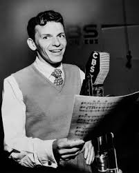
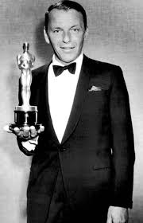

FRANK SINATRA

Francis Albert Sinatra ( December 12, 1915 – May 14, 1998) was an American singer, actor and producer who was one of the most popular and influential musical artists of the 20th century. He is one of the best-selling music artists of all time, having sold more than 150 million records worldwide.
Born: 12 December 1915, Hoboken, New Jersey, United States
Died: 14 May 1998, Cedars-Sinai Medical Records Office, Los Angeles, California, United States
Spouse: Barbara Sinatra (m. 1976–1998)
Genres: Traditional pop, Easy listening, Jazz, Swing music, Vocal jazz
ALBUMS:
Sinatra and Strings,
Sinatra and Swingin' Brass,
The Sinatra Family Wish You a Merry Christmas,
Sinatra Sings Days of Wine and Roses, Moon River,
Sinatra Sings Great Songs from Great Britain,
Sinatra Swings,
Sinatra–Basie: An Historic Musical First,
Sinatra's Sinatra,
Sinatra's Swingin' Session!!!,
Sing and Dance with Frank Sinatra,
Softly, as I Leave You,
Some Nice Things I've Missed,
Songs by Sinatra,
Songs for Swingin' Lovers!,
Songs for Young Lovers,
Strangers in the Night (Frank Sinatra album),
Swing Easy!,
A Swingin' Affair!,
That's Life (Frank Sinatra album),
Trilogy: Past Present Future,
The Voice of Frank Sinatra

AWARDS:
Frank SinatraAwards
Academy Award for Best Actor in a Supporting Role
1954 ·
From Here to Eternity
Grammy Award for Album of the Year
1967, 1966, 1959 ·
A Man and His Music, September of My Years, Come Dance with Me!
Grammy Award for Record of the Year
1967 ·
Strangers in the Night
Presidential Medal of Freedom
1985
Kennedy Center Honors
1983
Golden Globe Award for Best Actor – Motion Picture Musical or Comedy
1958 ·
Pal Joey
Golden Globe Award for Best Supporting Actor – Motion Picture
1954 ·
From Here to Eternity
Grammy Hall of Fame
2013, 2008, 2005, ... ·
Theme from New York, New York, Strangers in the Night, One for My Baby, One for the Road (Live), ...
Grammy Lifetime Achievement Award
1965
Academy Honorary Award
1946 ·
The House I Live In, The House I Live In
Congressional Gold Medal
1997
Golden Globe Cecil B. DeMille Award
1971